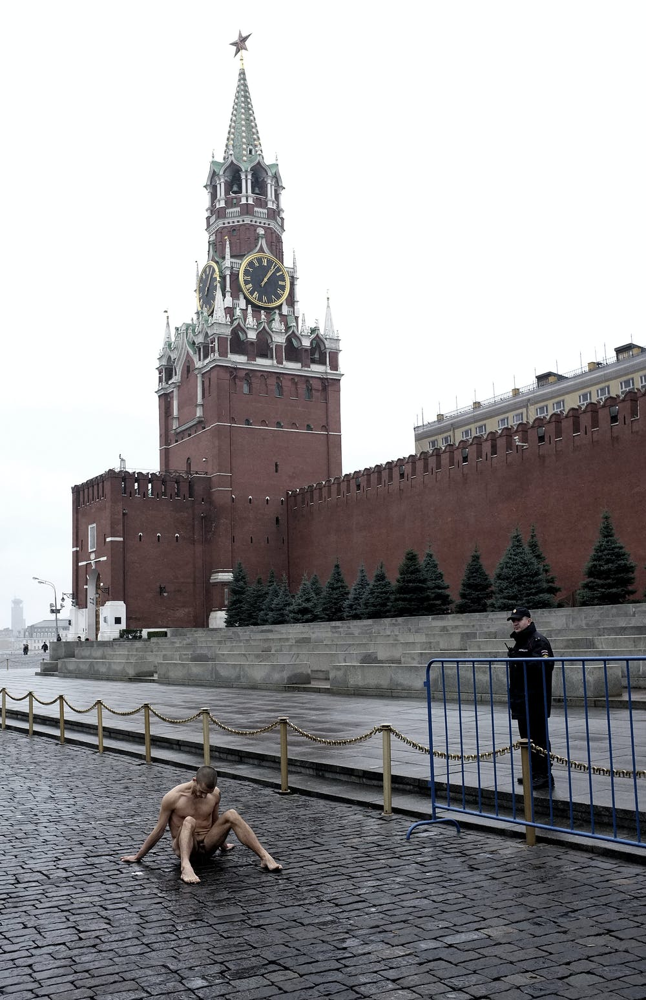

A March 7, 2011 poem by Phillip Wessels, shared in tribute to an action taken on November 10, 2013.

An artist nails his scrotum to the ground, a Russian sign of hopeless defeat. The naked truth: the art world reacts to Pyotr Pavlensky's Red Square protest • 14 November 2013 Interviews Ekow Eshun, Maryam Omidi, Jamie Rann, Igor Zinatulin • The Calvert JournalIt would be nice to conquer humanityBy setting myself down in the streetShaw and BrawleyAss to asphaltAnd taking up my prickTo show the world thatEven though the valley’s fields are goneI am a maleAnd I can yet still spill mySeed in this urban desertDevoid of nature’s signatureAnd the people would go byWondering what in the world...?I, laughing in their faces!Has anything ever been so rightTo forget for a momentThat I am a citizen,Shed my costume andSpread my cheeks opento touch my asshole to this street,This rocky mockery whichhas stolen from naturethe field I could frolic in?I could do thatJust to show themWhere we came fromThat we once lived stark nakedAnd rubbed our cocks withreckless abandon againstThe grass, the trees, the rocks and each Other, male or female,And we would only grinWith a moment's shynessBefore taking each other whereOnly savages want to go. Read more about the action at the Gaurdian article about it.